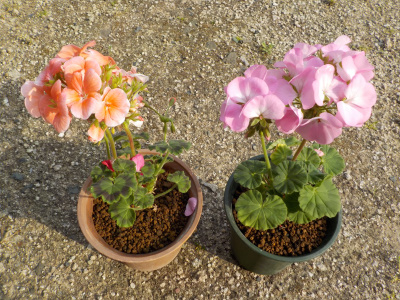
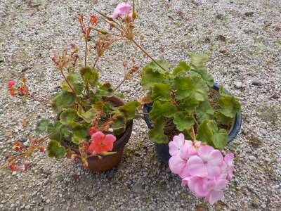
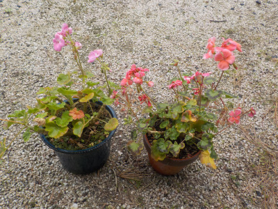
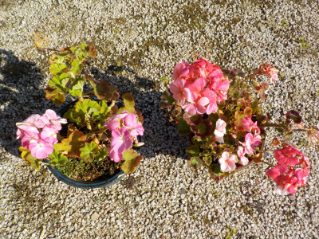
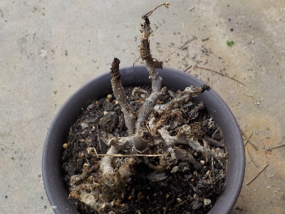
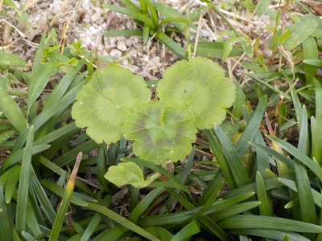
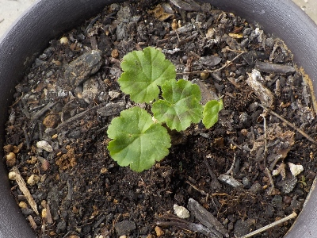
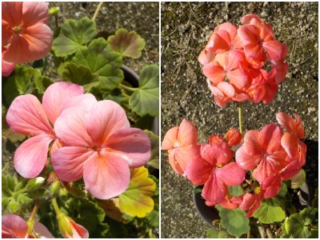

ゼラニウムを買いました。
更新日 : 2020/04/26

とっても安かったので買いました。1つ税込みで100円です。
大事に育てて大きくするつもりです。
更新日 : 2020/04/26

とっても安かったので買いました。1つ税込みで100円です。
大事に育てて大きくするつもりです。
更新日 : 2020/11/15

4月に買ったゼラニウムですが、今シーズンでずいぶん大きくなりました。
幹が太くなったので、来年は挿し木が出来そうです。
今でも花が咲いているので、花期が長くてとってもいいです。
更新日 : 2021/12/25

花の期間が長くていいですね。
買って良かったって思います。
植替えしたら、どこまで大きくなるでしょうね。大きくなったら見栄えがいいだろうな。
更新日 : 2022/02/12

2月でも玉のように花が咲くんですね。
軒下で寒いんですけど、負けずに咲いています。凄いな。
色違いの2株が両方咲いてるので、ゼラニウムはこんなもんなんでしょうね。
更新日 : 2024/11/04

タネから育てていたゼラニウムが1本枯れました。
何鉢もあるので1本くらい枯れたってどうってことないですが、ちょっと寂しい。

タネが落ちて庭で発芽してしるものがあったので、これを抜いて育てることにしました。

枯れた場所に挿しました。後から思ったんですが、土は変えた方がよかったかもしれない。
更新日 : 2025/12/31

ここ数年何末にバラが咲いていたんですが、今年はタイミングが悪く咲きませんでした。
バラの鉢は増えているので、1本くらい咲いてもいいのにな。今年はカーネーションも咲きませんでした。
ゼラニウムは咲いててよかった。いつでも咲いてるゼラニウムは最強な気がしました。
大切に育てたいですね。
季節で咲く花が違うのがいいって人も多いんでしょうけど、私1年中同じ花が咲いててもいい。年中いろんな花が咲いてた方がいい。